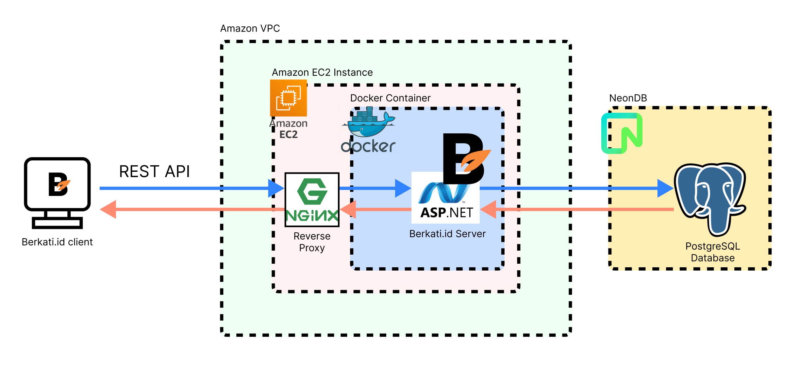

Sekilas tentang Berkati.id
Aplikasi untuk memfasilitasi keinginan pengguna yang ingin bersedekah makanan layak untuk orang yang kekurangan
Teknologi yang digunakan
Frontend
- Windows Presentation Foundation: Framework GUI untuk pengembangan frontend
- Material Design (UI Library): Library untuk mempermudah pengembangan frontend
- Figma: Digunakan untuk membuat rancangan awal tampilan aplikasi
Backend
- ASP .NET Core Web API: Framework pengembangan Web yang digunakan untuk mengembangkan REST API server
- JWT Authentication
- Bcrypt: Digunakan untuk enkripsi password
Database
- PostgreSQL: RDBMS untuk manajemen data persistent
- NeonDB: PaaS untuk hosting PostgreSQL Server secara gratis
Production
- Docker: Kontainer untuk deploy server backend ke cloud
- Amazon VPC
- Amazon EC2: IaaS untuk deploy server backend
- NGINX: Reverse proxy untuk redirect port pada server backend ke default TCP port 80 dan menerapkan request rate limit
Development
- Git: Version control
- GitHub: Collaboration tool
- Docker Hub: Cloud Docker Image manager
Skema
